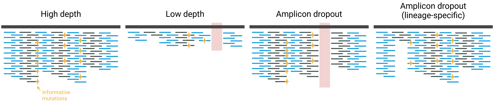

12 Lineage Abundance
- Summarise the bioinformatic steps involved in estimating lineage abundance from sequencing data.
- Apply the
nf-core/viralreconpipeline for wastewater analysis. - Evaluate sample quality with a particular focus on abundance estimation.
- Interpret the results from the Freyja software and its limitations.
- Prepare the abundance estimates for downstream analysis.
12.1 Bioinformatic analysis
The bioinformatic analysis of wastewater sequencing data broadly involves the following steps:
- Filter the raw sequencing data to remove low-quality reads and trim Illumina adaptors.
- Map the reads to the Wuhan-Hu-1 reference genome.
- Trim the primers from the aligned reads based on the primer location BED file.
- Identify changes relative to the reference sequence.
- Estimate the abundance of known SARS-CoV-2 lineages.
Most of these steps are in common with the processing of clinical samples. The main difference is the last step, where we use a specialised software to estimate the abundance of viral lineages based on the mutations found. There are different software packages designed to estimate lineage abundance from sequencing data and new ones are likely to be developed as the field evolves. See Kayikcioglu et al. 2023 and Sutcliffe et al. 2023 for an overview of the software packages available and their performance on synthetic data.
The software that we will use, implemented in the nf-core/viralrecon pipeline is called Freyja. This tool takes advantage of the large number of known lineages of SARS-CoV-2, which it pulls from the UShER global phylogeny. This global phylogeny is updated daily, and so is the Freyja database. Freyja combines the known mutations for each lineage with the frequency of observed mutations estimated from our sequencing data to estimate the frequency of those lineages.
12.3 Output Files
After running the pipeline, we get several output files (see viralrecon’s documentation). These are very similar to what has been described for clinical isolates. As a reminder, here are some files of interest:
multiqc/multiqc_report.html: a MultiQC quality report, including information about average depth of coverage, fraction of the genome covered, number of mutations identified, etc.variants/bowtie2/: directory with individual BAM files, which can be visualised with IGV if we want to look at the reads mapped to the reference genome.variants/ivar/variants_long_table.csv: a CSV file with the aggregated results of all the mutations detected in each sample.
The new directories of particular interest for wastewater analysis are:
variants/freyja/demix: directory containing the output files from thefreyja demixcommand, used to estimate lineage abundances.variants/freyja/bootstrap: directory containing the output files from thefreyja bootcommand, used to get confidence intervals for the estimated lineage abundances.variants/freyja/variants: directory containing the output files from thefreyja variantscommand, which includes all the variants (mutations) considered by Freyja in its lineage abundance calculations. These are somewhat redundant with the files invariants/ivar/variants_long_table.csv.
12.4 Freyja demix output
The main step of the Freyja analysis is the command freyja demix (which viralrecon runs for us), where the mutations present in the sequencing reads are used to infer the abundance of individual lineages.
These files are text-based, but in a non-standard format. Here is an example from one of our samples:
SRR18541029.variants.tsv
summarized [('Omicron', 0.9074885644836951), ('Delta', 0.04843510729864781), ('Other', 0.03151409250566481)]
lineages BA.1 BA.1.1.8 BA.1.20 AY.116 BA.1.8 B.1.1.529 XS BA.1.1.17 XP XD BA.1.1.5 BA.1.1.10 AY.39 AY.46.1 AY.3.1
abundances 0.42763980 0.33859152 0.04909740 0.04170587 0.03905280 0.02662011 0.02634620 0.00904814 0.00811069 0.00516789 0.00476190 0.00456621 0.00277376 0.00206299 0.00189249
resid 13.531715333760909
coverage 98.86633448149016Here is the meaning of each line from this file:
- The name of the file
- The frequency of variants of concern, which is added up based on the frequency of individual lineages.
- The name of each individual lineage detected in the sample.
- The corresponding frequencies of each lineage from the previous line, in descending order.
- The “residual” variation left from the statistical model used to estimate the frequencies; this value does not have an easy interpretation.
- The percentage of the genome covered at 10x depth. We can also obtain this information from the regular MultiQC report (see more about this in the QC section below).
We will later use a custom script to “tidy” these results into a more standard CSV format, aggregating the results from several samples and combining it with our metadata.
For similar lineages (i.e. with few distinguishing mutations) it can sometimes happen that Freyja cannot distinguish their abundance. This usually affects lower-frequency lineages, as there are fewer reads to cover them to start with.
In those situations, Freyja will assign equal frequency to all of them. This is important to know, as it means that the frequency of those lineages is likely to be inaccurate.
Generally, low-abundance lineages (< 1%) should be interpreted with caution, in particular for samples with low median depth of sequencing.
12.5 Quality Control
As usual, the first thing to do after running our pipeline is to check the quality of our results. For wastewater samples, there are a few main diagnostics to pay attention to:
- The average depth of sequencing of our samples, i.e. the average number of reads mapped to each position of the genome.
- Whether there was any amplicon dropout.
- The percentage of the genome covered at a certain depth of sequencing.
In addition, general quality metrics should also be considered, which we also cover below.
These metrics are all available from the MultiQC report generated by the pipeline saved in multiqc/multiqc_report.html.
12.5.1 General metrics
One of the first sections of the MultiQC report is “Variant calling metrics”, which contains a table with several metrics of interest, for example:
Sample # Input reads % Non-host reads # Trimmed reads (fastp) % Mapped reads # Mapped reads # Trimmed reads (ivar) Coverage median % Coverage > 1x % Coverage > 10x
Sample1 751204 NA 697880 697880 100.00 697867 1246.00 100.00 100.00
Sample2 377092 NA 331424 331424 100.00 331404 377.00 99.00 95.00
Sample3 174642 NA 134338 134338 100.00 134282 65.00 99.00 90.00
Sample4 14378 NA 12808 12808 100.00 12800 24.00 97.00 77.00These columns give us:
- The total number of reads that we started with.
- The percentage of those reads that matched the human genome.
- The number of reads that passed the quality filtering step, which includes adapter removal and quality trimming (using the
fastpsoftware). - The number and percentage of mapped reads. This is a good indicator of whether the sample contains non-human contamination, as that would result in lower mapping rates to the SARS-CoV-2 reference genome.
- The number of reads that had the amplicon primer site trimmed (using
ivarsoftware). It is expected that most reads will start at the primer site, so this number should be similar to the number of mapped reads. However, depending on the type of library used, this number might be smaller.
These initial metrics are essential to analyse, as it informs us of whether our samples are free of contamination and generally aligned well to the SARS-CoV-2 reference genome.
We should also assess the quality of our raw reads, by looking at the section “FastQC (raw reads)”, as detailed in Section 2.2.2.
12.5.2 Sequencing depth and coverage
The “Variant calling metrics” table has a few other metrics of particular interest for wastewater samples, namely:
- Coverage median: the number of reads that maps to each position of the genome on average.
- % Coverage > 10x: the fraction of the genome that is covered with at least 10 reads.
These two metrics together give us an idea of how much of the genome we have effectively sequenced and how deeply we have sequenced it. As mentioned earlier, the sequencing depth is critical for the estimation of lineage abundance. The more we sequence a sample, the more accurate are Freyja’s abundance estimates, as well as our ability to detect low-abundance lineages.
The two metrics on this table are useful summaries, however we can get an even more detailed insights from looking at the plot show in the section “Mosdepth > Cumulative coverage distribution” (see figure below).
mosdepth software. This plot allows us to evaluate what fraction of the genome is covered at a certain depth of sequencing. There are two ways to interpret this plot: “what fraction of the genome is covered at a certain minimum depth?” (vertical line, left); or “what is the maximum depth covering at least X% of the genome?” (horizontal line, right).There is no defined rule for which depth and/or coverage thresholds to use to keep or remove a sample from downstream analysis. Take “Sample4” in our example above: it only has a median depth of 24x with 77% of the genome covered at 10x, and a very sharp curve in the cumulative coverage plot. Should we remove this sample from further analysis? On the one hand, this sample may give less accurate information compared to other samples. On the other hand, if a high-frequency variant is present, we may still be able to detect it and it may therefore be a useful data point for our analysis.
12.5.3 Amplicon dropout
Another consideration to take is whether there was any PCR amplicon dropout (detailed in Section 5.2.2). In particular, if you sistematically failed to amplify the S (Spike) gene, where many lineage-distinguishing mutations occur, this may lead to poorer lineage abundance estimation, as we are missing data in those regions of the genome.
Again, there is no rule about whether or not to exclude a sample from analysis based on amplicon dropout, but it is important to look at the Amplicon Coverage Heatmap of the MultiQC report and make a note of any samples that may be particularly problematic.
A sistematic amplicon dropout may indicate that improvements are needed during the lab protocols or that new primer panels are required.
In some cases, amplicon dropout is lineage-specific, for example due to mutations in the primer sites. These cases will be very difficult to detect in wastewater samples, since they usually contain mixed lineages. If a lineage is characterised by several mutations across different amplicons, this may not cause an issue, as Freyja will still be able to calculate its frequency from the other mutations. However, in some situations it may lead to a bias that we cannot easily control for.
The figure below illustrates this issue, as well as the issue of low depth of sequencing discussed earlier.

In summary, although it is not always easy to decide whether to keep or remove a sample from analysis, evaluating the sequencing depth and genome coverage is a good indicator for which samples may be more or less accurate. We may decide to keep them in our analysis, knowing that we need to interpret their results more carefully. Finally, for surveillance purposes, you may want to discuss as a team which thresholds you want to use to exclude samples from reporting and consistently apply those across the teams performing the data analysis.
12.6 Exercises
12.7 Summary
- The main bioinformatic steps for lineage abundance estimation from sequencing data are: quality filtering of raw reads, mapping to the reference genome, trimming PCR primers, identifying mutations and their frequency and estimating lineage abundance.
- The development version of
viralreconcan perform lineage abundance using the Freyja software.- For wastewater data, we usually skip the generation of a consensus genome, as it would not necessarily be reflective of the genomes present in the sample.
- Freyja combines mutation frequencies and their sequencing depth with known lineage mutations, to infer their frequencies in the sample.
- Higher sequencing depth gives more accurate estimates.
- Low-frequency lineages are harder to detect and their frequency estimates less accurate.
- Very similar lineages may be artificially assigned the same frequency, if some of their distinctive mutations are missing from our data.
- Sequencing depth, genome coverage and amplicon dropout are important metrics to assess the quality of wastewater samples, as they may affect the accuracy of lineage abundance estimation.
- Lineage abundance estimation relies on previously known lineages, and therefore new lineages are not directly reported.